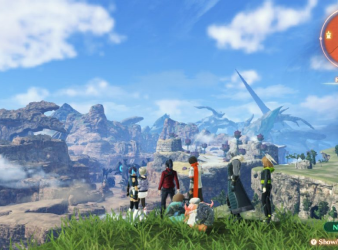
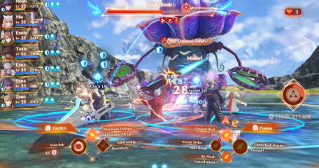

Une aventure RPG touchante vous attend dans Xenoblade Chronicles 3 sur Nintendo Switch. Rejoignez Noah, Mio et leurs compagnons et traversez des paysages titanesques, affrontez de terribles créatures et luttez pour briser le cycle de violence dans lequel leur monde est piégé.
Xenoblade Chronicles 3



Trame narrative
«Se battre pour vivre... vivre pour se battre.» Le vaste et sublime monde d'Aionios est le théâtre d'un conflit sans fin entre les nations de Keves et d'Agnus. Le temps est une ressource extrêmement précieuse pour leurs habitants, qui doivent combattre sans relâche afin d'espérer vivre assez longtemps pour arriver au bout de leurs dix années de service. Suite à une rencontre fortuite, six soldats venus de ces nations ennemies décident de passer outre ce qui les oppose et d'unir leurs forces pour révéler au grand jour une menace dépassant tout ce qu'ils n'ont jamais connu.
Découvrir nos autres articles
Hack and slash